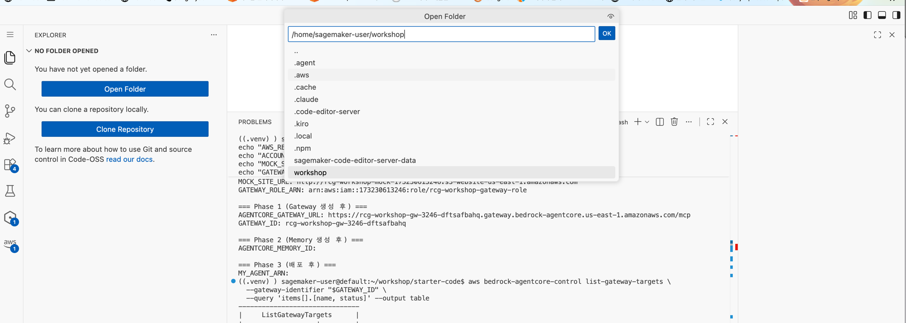

Step 2: Agent 코드 작성 + Code Interpreter 연동 ⏱️ 20분 ★★☆¶
이 Step의 목표
Gateway에서 Tool 목록을 가져오고, Code Interpreter를 추가하여 Agent를 구성합니다.
Agent = Model + System Prompt + Gateway(Tools) + Code Interpreter
핵심 패턴¶
# AgentCore Native Agent의 구조
from strands import Agent
from strands.models import BedrockModel
from strands_tools.code_interpreter import AgentCoreCodeInterpreter
from mcp import ClientSession
from mcp.client.streamable_http import streamablehttp_client
import asyncio, nest_asyncio
nest_asyncio.apply()
# Gateway에서 Tool 가져오기 (비동기 MCP 연결)
async def get_gateway_tools(gateway_url, headers={}):
async with streamablehttp_client(gateway_url, headers=headers) as (read, write, _):
async with ClientSession(read, write) as session:
await session.initialize()
return (await session.list_tools()).tools
gateway_tools = asyncio.run(get_gateway_tools(GATEWAY_URL))
# Code Interpreter 추가
code_interpreter_tool = AgentCoreCodeInterpreter(region="us-east-1")
# Agent 조립: Gateway Tools + Code Interpreter
agent = Agent(
model=model,
system_prompt=SYSTEM_PROMPT,
tools=list(gateway_tools) + [code_interpreter_tool.code_interpreter]
)
result = agent("사용자 질문")
Agent는 Gateway에서 Tool 목록을 자동으로 가져옵니다. Lambda ARN을 몰라도 됩니다. Code Interpreter를 추가하면 Agent가 데이터 분석이나 계산이 필요할 때 Python 코드를 실행할 수 있습니다.
2-1. agents/phase1_recommend.py 열기¶
Code Editor 좌측 상단 "Open Folder" → /home/sagemaker-user/workshop 입력 → OK

폴더를 열면 터미널이 새로 시작됩니다
환경변수와 venv가 초기화됩니다. 터미널에서 아래를 실행하세요:
Explorer에서 starter-code/agents/phase1_recommend.py를 클릭하여 코드를 확인하세요:
import os
import uuid
import asyncio
import nest_asyncio
from strands import Agent
from strands.models import BedrockModel
from strands_tools.code_interpreter import AgentCoreCodeInterpreter
from bedrock_agentcore.runtime import BedrockAgentCoreApp
from mcp import ClientSession
from mcp.client.streamable_http import streamablehttp_client
nest_asyncio.apply()
# Gateway URL (환경변수에서 읽음)
GATEWAY_URL = os.environ.get("AGENTCORE_GATEWAY_URL", "")
REGION = "us-east-1"
# 모델
model = BedrockModel(
model_id="us.anthropic.claude-sonnet-4-6-20250514-v1:0",
region_name=REGION,
)
# Code Interpreter (데이터 분석/계산용)
code_interpreter_tool = AgentCoreCodeInterpreter(region=REGION)
Code Interpreter가 필요한 이유
상품 추천 시 가격 비교, 할인율 계산, 통계 분석 등을 Agent가 직접 Python 코드로 수행할 수 있습니다. Gateway Tool만으로는 "이 상품들 중 가성비 1위는?"에 대한 정확한 계산이 어렵습니다.
2-2. System Prompt에 Code Interpreter 지시 추가 (직접 수정!)¶
실습: 직접 코드를 수정합니다
agents/phase1_recommend.py를 열고 SYSTEM_PROMPT 부분을 찾으세요.
기존에는 "행동 규칙"만 있습니다. 여기에 Code Interpreter 활용 지시를 추가합니다.
현재 코드의 System Prompt 끝부분 (## 제약 위)에 아래 블록을 추가하세요:
## 계산이 필요할 때
- 가격 비교, 할인율 계산, 평점 분석은 code_interpreter를 사용하세요
- 수치 기반 판단은 반드시 코드로 검증하세요
- 추천 근거를 시각화할 때도 code_interpreter로 차트 생성
왜 이걸 추가하나요?
Agent에게 Code Interpreter를 Tool로 줘도, "언제 쓰라"고 안 알려주면 안 씁니다.
| System Prompt | Agent 행동 |
|---|---|
| Code Interpreter 지시 없음 | 텍스트로만 추천 (차트 없이 글로만 설명) |
| "code_interpreter로 차트 생성" 추가 | 추천 근거를 matplotlib 차트로 시각화하여 응답에 포함 |
Tool을 주는 것 ≠ Tool을 쓰게 하는 것. Prompt로 행동을 유도해야 합니다.
System Prompt = Agent의 행동을 결정하는 핵심
같은 Tool이라도 Prompt가 다르면 Agent의 행동이 완전히 달라집니다.
- "알러지 제외" 규칙이 없으면 → 견과류 상품도 추천할 수 있음
- "프로필 먼저 조회" 규칙이 없으면 → 바로 검색부터 할 수 있음
2-3. Gateway 연결 + Tool 조합 코드¶
Agent가 Gateway에서 Tool을 가져오고, Code Interpreter와 합치는 핵심 코드:
async def get_gateway_tools(gateway_url: str, headers: dict) -> list:
"""Gateway에서 MCP Tool 목록을 가져옵니다."""
async with streamablehttp_client(gateway_url, headers=headers) as (read, write, _):
async with ClientSession(read, write) as session:
await session.initialize()
tools_result = await session.list_tools()
return tools_result.tools
# 사용 예시
access_token = os.environ.get("GATEWAY_ACCESS_TOKEN", "")
headers = {"Authorization": f"Bearer {access_token}"} if access_token else {}
gateway_tools = asyncio.run(get_gateway_tools(GATEWAY_URL, headers))
# Gateway Tools + Code Interpreter 합치기
all_tools = list(gateway_tools) + [code_interpreter_tool.code_interpreter]
agent = Agent(
model=model,
system_prompt=SYSTEM_PROMPT,
tools=all_tools,
)
result = agent("고객 C001에게 추천해주세요")
비동기 연결 주의
streamablehttp_client는 async context manager입니다. asyncio.run() 또는 nest_asyncio를 사용하여 동기 코드에서 호출합니다. Runtime 내부에서는 IAM Role 기반으로 인증되므로 headers가 빈 값일 수 있습니다.
2-4. 로컬 테스트¶
배포 전에 로컬에서 동작을 확인합니다:
정상 출력 예시
🛒 상품 추천 Agent (AgentCore Native)
==================================================
🤖 Agent: 김건강님(VIP)의 프로필을 확인했습니다.
- 선호: 건강식품, 고단백
- 알러지: 견과류
[Code Interpreter] 가격대별 상품 분석 실행 중...
추천 상품 3개:
1. 비타민C 세럼 (35,000원, ★4.8) — 건강 관심 + 피부 관리
2. 프로틴 쉐이크 초코맛 (3,500원, ★4.1) — 고단백 선호
3. 즉석밥 오곡밥 (4,200원, ★4.5) — 건강식품, 견과류 미포함 ✓
⚠️ 제외: 오트밀 프로틴바(기구매), 너트 그래놀라(견과류), 유기농 그래놀라(견과류)
관찰 포인트¶
실행 결과에서 아래를 확인하세요
- ✅ Agent가 Gateway를 통해 3개 Tool을 자동으로 인식했는가?
- ✅ Code Interpreter도 Tool 목록에 포함되어 있는가?
- ✅
customer_profile→purchase_history→product_search순서로 호출했는가? - ✅ 알러지(견과류) 상품을 정확히 제외했는가?
다음
Agent 동작 확인! → Step 3: Runtime 배포